Alessio Cardelli, UX/UI designer di Roma. Progettazione di interfacce e esperienze di prodotti digitali.
Mi occupo di UX, UI, product design, product strategy, business strategy, formazione e mentoring.
Se stai vedendo questi testi, vuol dire che i CSS non si sono caricati. Enjoy.
Piacere, Alessio. Sono un designer, mi occupo di user experience.
Collaboro con i team di aziende e startup per raggiungere obiettivi di business grazie a processi di design. Aiuto aspiranti e junior designer ad accrescere le proprie competenze. Scrivo, insegno, condivido a proposito di UX.
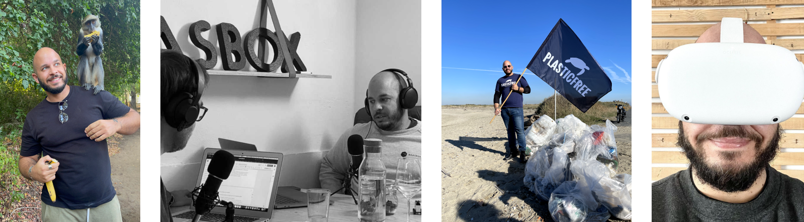

Dal 2012 lavoro con piacere nel mondo dell’innovazione digitale a 360°. Ad oggi sono COO & Head of Product Design di Baasbox, amo viaggiare e, nel tempo libero, impegnarmi in qualche side-project.
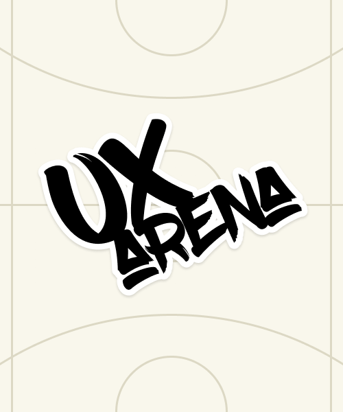
Una piattaforma destinata a UX designer per richiedere un brief reale da usare per casi studio "concept" per il proprio portfolio.
Presto online :)
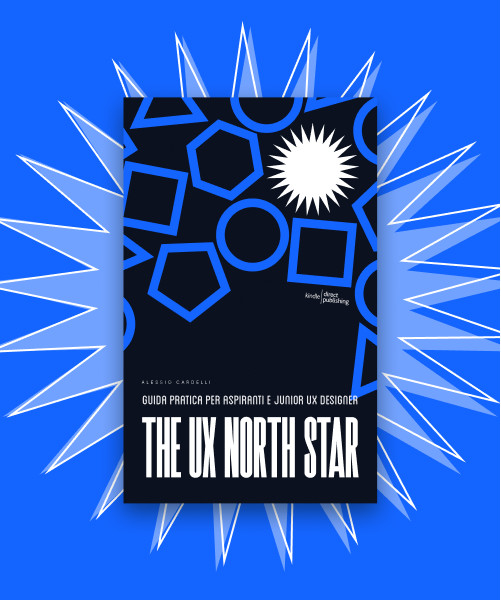
Contenuti destinati ad aspiranti e junior UX designer. Il progetto si chiama The UX North Star, e non è soltanto un libro.
Scopri di più sul progetto
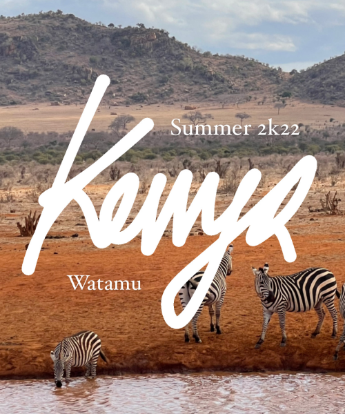
Il fascino dell’Africa: il Kenya e Watamu. Un viaggio indimenticabile e consigli pratici per organizzarlo al meglio.
Viaggia con me in Kenya
Il 2022 è stato l’anno dell’esplosione dei sistemi text-to-image basati su Open AI. Questo è un caso studio per esplorarli.
Approfondisci il progetto
Nel corso degli anni ho avuto il piacere di operare in decine di mercati, tra i quali fitness, telecomunicazioni, sport, fintech, medicina, trasporti, formazione, editoria.
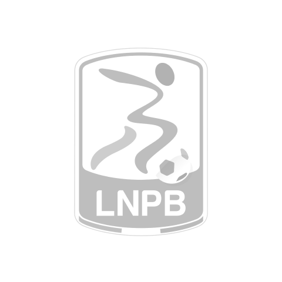
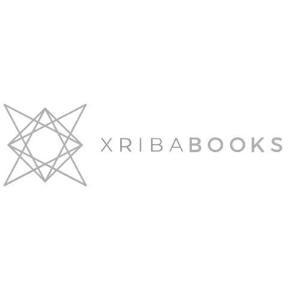
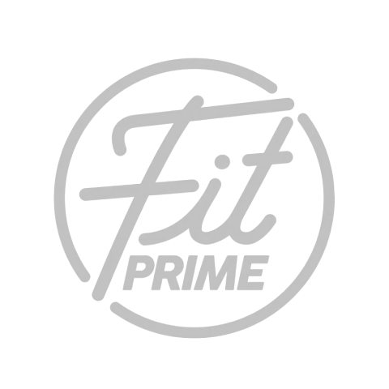
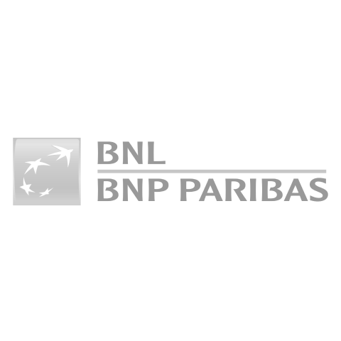
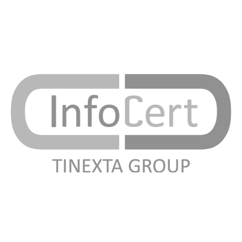
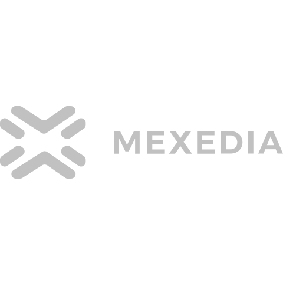
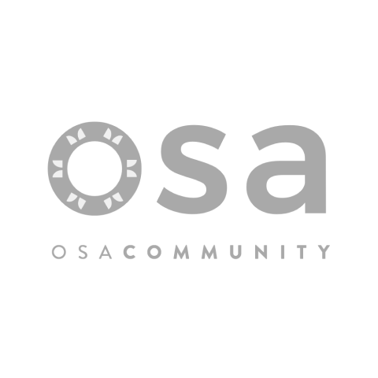
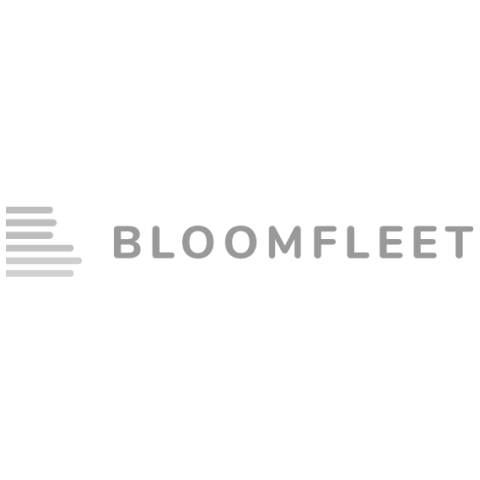
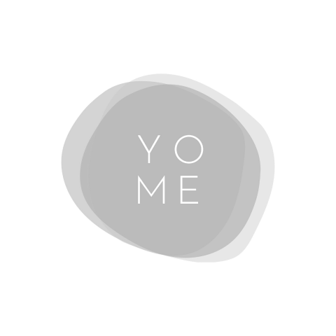
Amo acquisire e condividere conoscenza. Elaboro e pubblico articoli, video, webinar, podcast, report su temi che riguardano la UX, la UI, il design, il business digitale, il service design e l’innovazione.
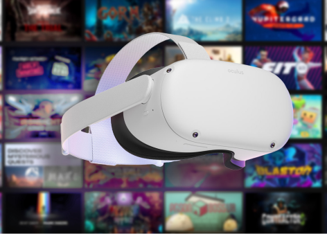
Parliamo di user experience per la virtual reality.
Leggi l'articolo
Vivere nel metaverso: VR, blockchain, NFT e nuove tecnologie.
Ascolta la puntata
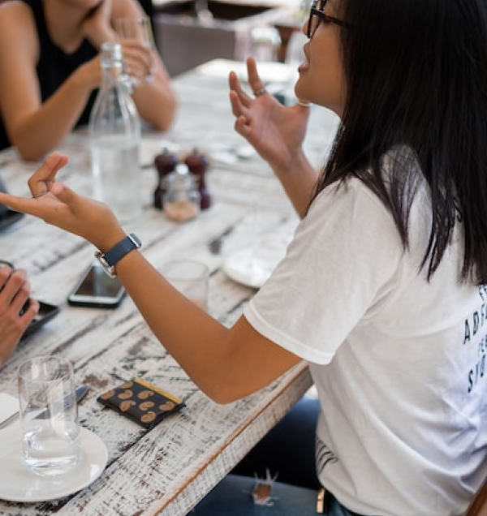
La condivisione in un progetto digitale: divergere per convergere.
Leggi l'articolo
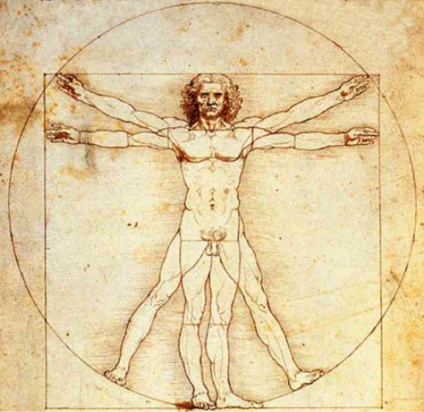
UX designer di Vitruvio: skill matrix e skill assestment.
Leggi l'articolo
Intervista a Chiara Schettino per Catobi: parliamo di ricerca.
Ascolta l'intervista
Customer Experience e User Experience, dialogo con Simone Mariano.
Ascolta la puntata
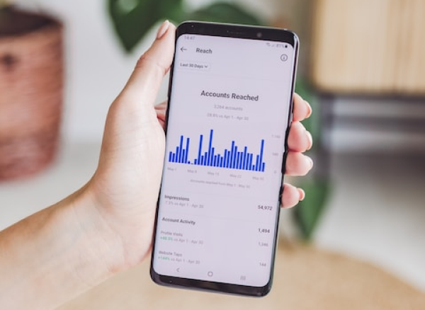
Perché investire in attività di UX spiegato con i numeri.
Leggi l'articolo
Intervista a Paola Bisogno per Catobi: parliamo di ricerca.
Ascolta l'intervista
Calcolare il ROI sulle attività di User Experience.
Leggi l'articolo
Intervista a Paul Romero per Catobi: parliamo di ricerca.
Ascolta l'intervista<
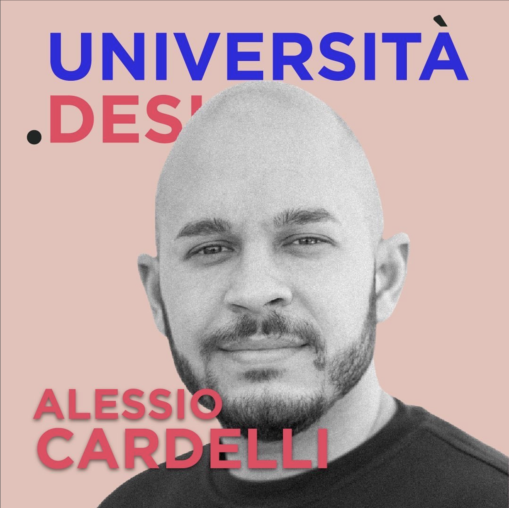
Futuro e formazione per chi vuole fare UX design.
Ascolta l'intervista
UX, ricerca e Customer Experience: innovation sprinz con Catobi.
Ascolta il podcast
Lego e progettazione digitale, una puntata per Space in a Box.
Ascolta il podcast
Minimum Viable Product o Fast Go To Market? Parliamone.
Leggi l'articolo
Anche i Big hanno i Bug.
Leggi l'articolo
Ricerca, validazione e processi di UX: webinar live con Thesignof.
Guarda la registrazione
Il rapporto tra designer e developer: webinar live con Thesignof
Guarda la registrazione
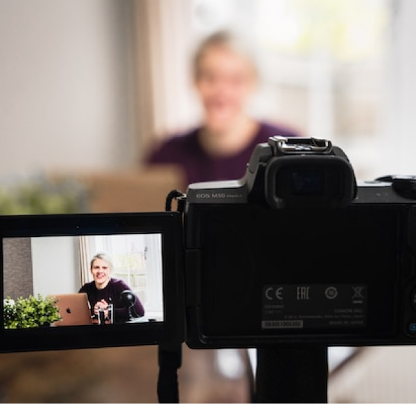
Progettare un design system con gli occhi di un developer.
Guarda la registrazione
Progettare un sito web accessibile: report da scaricare.
Scarica il report
Le nuovi abitudini di acquisto post lockdown: report da scaricare.
Scarica il report
Personal branding e UX design: intervista per Design Informale.
Guarda la registrazione
Come nasce un prodotto digitale, intervista per E-makers.
Guarda la registrazione
Non mi occupo solo di UX ma cerco di contribuire in progetti e iniziative che sposano i miei valori. Sono impegnato su temi come formazione, divulgazione, ambiente, donazioni, volontariato.
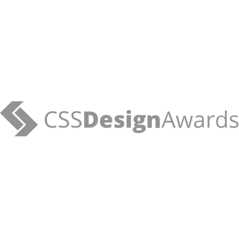
Sono PRO Judge per CSS Design Awards con +850 website giudicati.
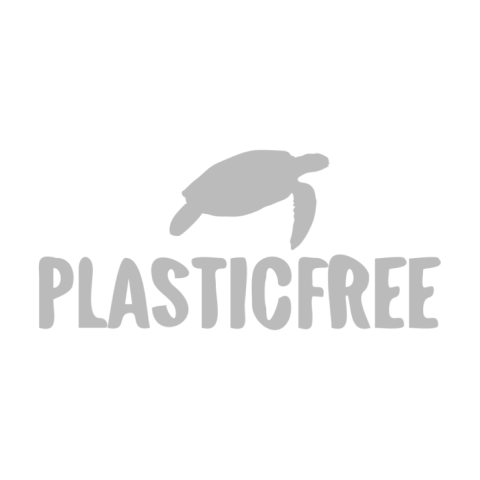
Sono volontario referente per la città di Fiumicino per PlasticFree.
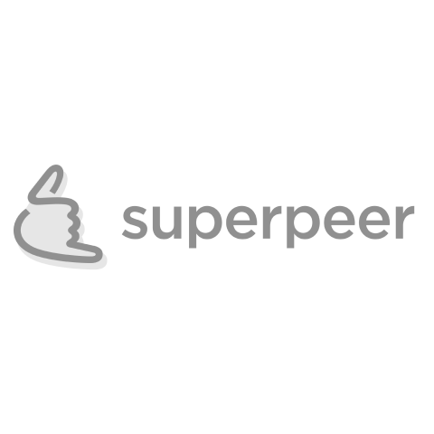
Sono UX/UI mentor su piattaforme come Designed e Superpeer.
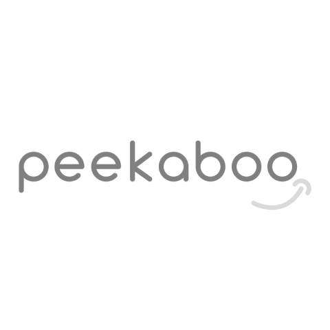
Sono startup mentor (area UX & Product) per la community di Peekaboo.
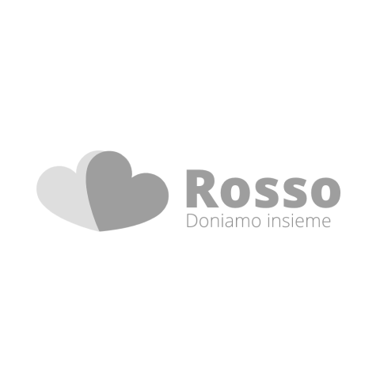
Collaboro con Rosso, un progetto in ambito donazioni di sangue per under30.